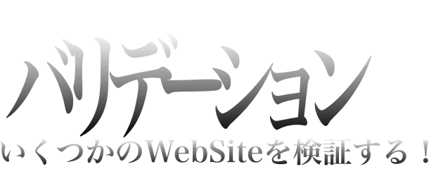

Validationとは
Validationとは英語で検証という意味で、HTMLの文法や仕様が正しく、適切に記述されているか検証します。 ここでは10個のWebサイトをW3Cの提供するMarkup Validation Serviceにて検証しました。
Webサイトを検証する
起業の教科書
このサイトは計300サイト以上作るアフィリエイター原田翔太さんが作ったサイトで、検索エンジンで「起業」と検索すると、1番上位に表示されるサイトです。
| Result: | 74 Errors, 130 warning(s) |
|---|---|
| Address: | http://softget.com/ |
| Doctype: | XHTML 1.0 Transitional |
和佐大輔のアイディア宝庫
17歳のときに1億円稼いだと言われている和佐大輔のサイトで、アフィリエイターのトップといっても過言ではない方のサイトです。
| Result: | 56 Errors, 4 warning(s) |
|---|---|
| Address: | http://successlab.jp/official/ |
| Doctype: | XHTML 1.0 Transitional |
Inforati
Macの使い方をかなりわかりやすく説明してくださる最高のサイトです。このサイトの特徴は非営利目的でかつ、JavaScriptを上手くつかっているところです。はっきり言ってMacのことなら、検索エンジンよりもこのサイトの方がわかりやすいです。
| Result: | 17 Errors |
|---|---|
| Address: | http://inforati.jp/ |
| Doctype: | XHTML 1.0 Transitional |
TRON-LEGACY
日本でも有名？になったトロンレガシーと呼ばれるSF映画の海外のサイト。このサイトは最強の動的サイトだと思います。すべて見てもらえればわかりますが、ものすごいJavaScriptおよびflashおよびJavaです。
| Result: | 25 Errors, 22 warning(s) |
|---|---|
| Address: | http://www.disney.co.uk/tron/index_flash.jsp |
| Doctype: | HTML 4.01 Strict |
WEBデザインの見本帳
すばらしいWebサイトを紹介するWebサイト。これによって、どんなWebサイトがあるのかを知る事が出来る。
| Result: | 54 Errors, 17 warning(s) |
|---|---|
| Address: | http://www.web-mihon.com/ |
| Doctype: | HTML 4.01 Transitional |
Apple
最初のWebサーバ NeXTcubeを開発したmr.jobsとmr.wozniakによって、設立された会社のアメリカ版 Webサイト。
| Result: | 2 Errors, 1 warning(s) |
|---|---|
| Address: | http://www.apple.com/ |
| Doctype: | HTML5 |
microsoft
世界最大のコンピュータ・ソフトウェア会社のWebサイト。apple開発者曰く、appleをまねたと言われている。
| Result: | 517 Errors, 485 warning(s) |
|---|---|
| Address: | http://www.microsoft.com/ |
| Doctype: | HTML5 |
牧野工房
Webコーディング専門の会社「牧野工房」。ここのコーディング技術は本にもなっていて、かなり、Webコーディングにおいて、参考になります。
| Result: | 28 Errors, 49 warning(s) |
|---|---|
| Address: | http://www.makinokobo.com/ |
| Doctype: | XHTML 1.0 Transitional |
Tasker☆net~version2.0~
大学1年のときに私が作ったクズサイト。Taskerは私の本名から来ており、☆は宇宙海賊ゴー☆ジャスから来ている。元々、京都産業大学附属高校のときに作った「Tasker☆net~version1.0~」をちょっと改変しただけのサイトである。
| Result: | 16 Errors, 1 warning(s) |
|---|---|
| Address: | http://www.cse.kyoto-su.ac.jp/~g1144704/tasker_2-0/ |
| Doctype: | XHTML 1.0 Transitional |
平#重行
京都産業大学コンピュータ理工、ランチタイムトークでおなじみの平#先生。約半年（2012年）にドメイン（hir.ai）を取得されたそうです。しかも、HTML5を使っています。
| Result: | 71 Errors, 1 warning(s) |
|---|---|
| Address: | http://hir.ai/ |
| Doctype: | HTML5 |
結果
どのサイトであってもW3Cの検証サービスでエラーが出た。さらに大手企業であってもエラーがあり、特にmicrosoftのエラーは500を超えた。 W3C検証サービスはWEBページ作成の為の教材で紹介されている事が多いのにも関わらず、この結果というのは少し驚いた。